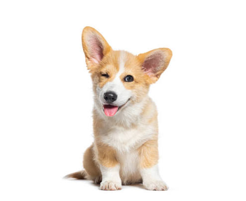
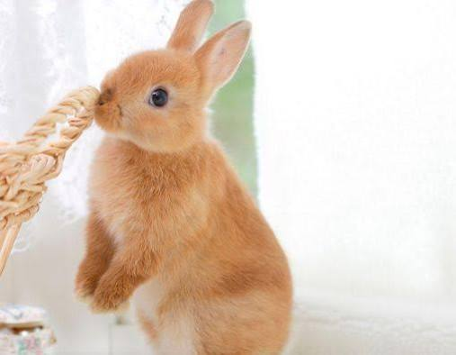
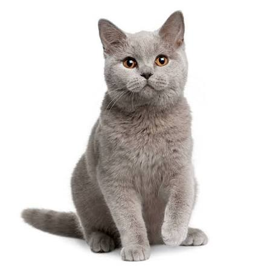
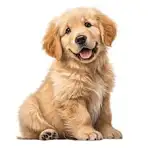

Hewan Siap Adopsi
Mereka sudah divaksin, sehat, dan siap menjadi bagian dari keluargamu.

Kucing
Mochi (1 Tahun)
Sangat manja, suka bermain bola benang, dan sudah terbiasa menggunakan kotak pasir.

Anjing
Bruno (2 Tahun)
Aktif, cerdas, dan sangat ramah terhadap anak-anak maupun hewan peliharaan lain.

Kelinci
Snowy (8 Bulan)
Tenang, suka wortel segar, dan senang dielus bagian kepalanya.

Kucing
Wiloww (1 Tahun)
Kucing yang pendiam, namun aktif bermain dengan temannya, dan sudah terlatih menggunakan kotak pasir.

Anjing
Kieyy (1 Tahun)
Aktif, agak ceroboh, dan suka usil dengan teman dan pengunjung.